Timing Model
Overview
SFQ circuits usually operate as gate-level pipelines. However, by controlling the arrival order of data and clock pulses, the same gates can also be used in a combinational style.
RustSFQ uses an arrival-order-based timing model so that designers can describe the intended behavior of arbitrary SFQ circuits while still keeping this flexibility. RustSFQ also provides a cycle-level simulation environment based on this timing model.
Assumptions
RustSFQ models timing under the following assumptions:
- The whole circuit is driven by a single clock source with a fixed frequency.
- The start time of a cycle may differ from gate to gate. For each gate, a cycle is measured from the earliest pulse that can arrive at that gate.
- A logical value is represented by the presence or absence of a pulse. No pulse means
0; one or more pulses mean1. In particular, two or more pulses are treated the same as one pulse.
Example 1
The source code and simulation code for this example are available under samples/timings.
Consider the following circuit, which consists of an OR gate followed by a NOT gate.
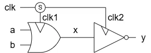
Pipelined Version
Because OR and NOT gates are clock-synchronous gates, they are commonly operated as a two-stage pipeline. In RustSFQ, this can be written as follows:
#![allow(unused)]
fn main() {
fn nor_pipelined() -> Circuit<3, 0, 1, 0> {
let inputs = ["a", "b", "clk"];
let outputs = ["y"];
let (mut ckt, [a, b, clk], [], [y_out], []) =
Circuit::create(inputs, [], outputs, [], "NorPipelined");
let (clk1, clk2) = ckt.split(clk);
ckt.label(&clk1, "clk1");
// pipelined
let x = ckt.or(a % 1, b % 1, clk1 % 0).label("x", &mut ckt);
ckt.label(&clk2, "clk2");
// pipelined
let y = ckt.not(x % 1, clk2 % 0);
ckt.unify(y, y_out);
return ckt;
}
}Both the or and not gates specify that the clock pulse arrives before the data input pulses.
The % operator attaches an arrival-order number to each input.
Only the relative order matters; these numbers are not physical delay values.
Run the cycle-level logical simulation with:
cd samples/timings/logical
cargo run logical > modules.v
iverilog -g2012 -s top -I ../../../lib/logical/ nor-p-test.sv
./a.out
gtkwave nor-p-test.vcd
The simulation result is shown below.
The intermediate signal x = a | b is delayed by one cycle from a and b, and the output y = ~x is delayed by one more cycle.
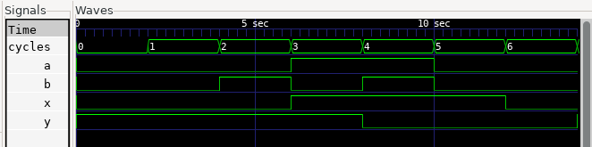
Next, run the analog simulation with:
cd samples/timings/spice
cargo run spice > modules.cir
josim-cli -o nor-p-test.csv nor-p-test.cir
python josim-plot2.py nor-p-test.csv -t stacked
The result is:
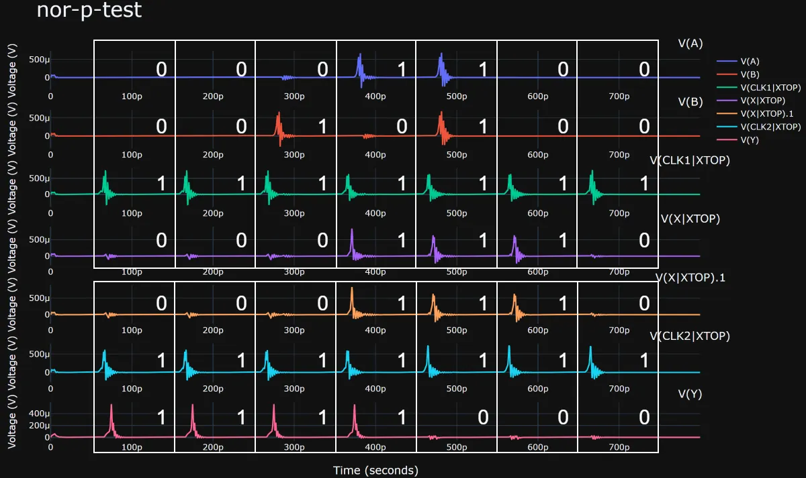
The top four traces show the inputs and output of the OR gate, and the bottom three traces show the input and output of the NOT gate. The white boxes indicate the cycle boundaries for each gate.
The start time of each gate-local cycle is determined by the first pulse that can arrive at that gate.
In this example, both gates use the clock signal as the reference, which matches the description let x = ckt.or(a % 1, b % 1, clk1 % 0).
The 0 and 1 labels in the figure indicate whether a pulse is present in that cycle.
These values match the cycle-level logical simulation above.
Combinational Version
If the clock arrives after the data within a cycle, the gate behaves like part of a combinational circuit.
This behavior can be described in RustSFQ as follows:
#![allow(unused)]
fn main() {
fn nor_combinational() -> Circuit<3, 0, 1, 0> {
let inputs = ["a", "b", "clk"];
let outputs = ["y"];
let (mut ckt, [a, b, clk], [], [y_out], []) =
Circuit::create(inputs, [], outputs, [], "NorCombinational");
let (clk1, clk2) = ckt.split(clk);
ckt.label(&clk1, "clk1");
// combinational
let x = ckt.or(a % 0, b % 0, clk1 % 1).label("x", &mut ckt);
ckt.label(&clk2, "clk2");
// combinational
let y = ckt.not(x % 0, clk2 % 1);
ckt.unify(y, y_out);
return ckt;
}
}The only difference from the pipelined version is the timing specified on the OR and NOT gates. In terms of connectivity, both descriptions still correspond to the same circuit schematic.
The cycle-level logical simulation gives the following result, confirming that the circuit operates combinationally.
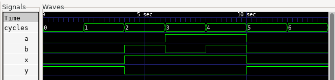
Now consider the corresponding analog simulation. Timing specifications in RustSFQ describe the intended behavior of the circuit. They do not, by themselves, guarantee that the physical circuit satisfies those timing constraints.
For that reason, BUFF gates are inserted on the clock path below to adjust the delay.
#![allow(unused)]
fn main() {
fn nor_combinational() -> Circuit<3, 0, 1, 0> {
let inputs = ["a", "b", "clk"];
let outputs = ["y"];
let (mut ckt, [a, b, clk], [], [y_out], []) =
Circuit::create(inputs, [], outputs, [], "NorCombinational");
let (clk1, clk2) = ckt.split(clk);
ckt.label(&clk1, "clk1");
let x = ckt.or(a % 0, b % 0, clk1 % 1).label("x", &mut ckt);
// delays for analog simulation
let clk2 = ckt.buff(clk2);
let clk2 = ckt.buff(clk2);
ckt.label(&clk2, "clk2");
let y = ckt.not(x % 0, clk2 % 1);
ckt.unify(y, y_out);
return ckt;
}
}The analog simulation result is:
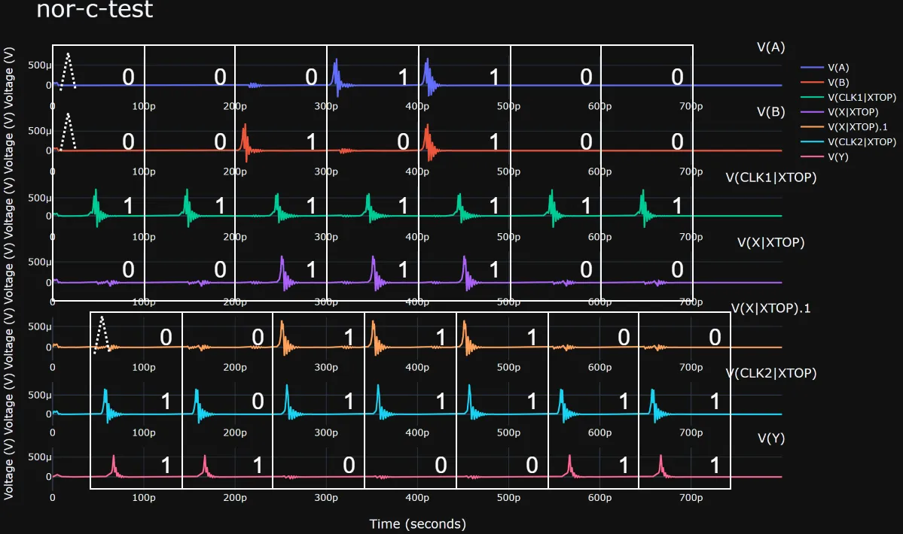
Cycle start positions differ by gate and are based on the earliest time at which an input signal can arrive at each gate.
In the first cycle of this example, there are no pulses on A, B, or X, but dashed lines mark where those pulses will appear if they are present.
The 0 and 1 labels in this simulation result match the earlier cycle-level logical simulation.
Example 2: Single-Cycle and Multi-Cycle Paths
The examples in this section compare a single-cycle path with a multi-cycle version of the same data path.
Both circuits split the input a into two branches.
One branch is captured by a DFF to produce x; the other branch is used as the second input of an AND gate.
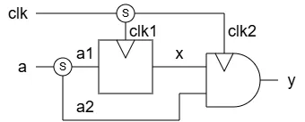
Single-Cycle Path
In the single-cycle version, the second branch, a2, has no explicit cycle delay.
It is consumed by the pipelined AND gate in the usual way.
The _p helpers describe the ordinary pipelined arrival order: the clock arrives before each data input.
#![allow(unused)]
fn main() {
fn single_cycle_path() -> Circuit<2, 0, 1, 0> {
let inputs = ["a", "clk"];
let outputs = ["y"];
let (mut ckt, [a, clk], [], [y_out], []) =
Circuit::create(inputs, [], outputs, [], "SingleCyclePath");
let (a1, a2) = ckt.split(a);
ckt.label(&a1, "a1");
ckt.label(&a2, "a2");
let (clk1, clk2) = ckt.split(clk);
ckt.label(&clk1, "clk1");
let x = ckt.dff_p(a1, clk1);
ckt.label(&x, "x");
ckt.label(&clk2, "clk2");
let y = ckt.and_p(x, a2, clk2);
let y = ckt.jtl(y);
ckt.unify(y, y_out);
ckt
}
}The cycle-level logical simulation shows the values of a, x, and y for the single-cycle path.
The numbers in the waveform identify the input values associated with each cycle in which the AND output is 1.
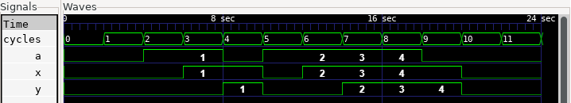
The corresponding analog simulation shows the pulse waveforms at the input, DFF output, bypass path, clock branches, and output.
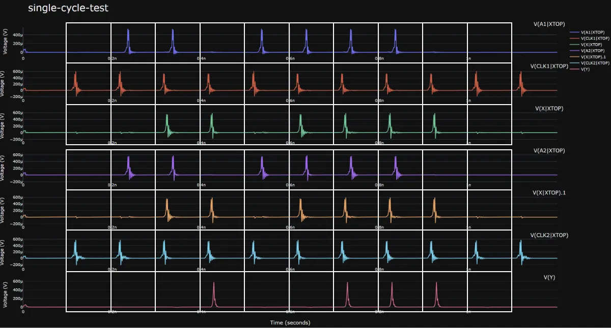
Multi-Cycle Path
The multi-cycle version delays the a2 branch by two additional cycles before it reaches the same AND gate.
For example, this can model a very long interconnect whose signal propagation takes a substantial amount of time.
#![allow(unused)]
fn main() {
fn multi_cycle_path() -> Circuit<2, 0, 1, 0> {
let inputs = ["a", "clk"];
let outputs = ["y"];
let (mut ckt, [a, clk], [], [y_out], []) =
Circuit::create(inputs, [], outputs, [], "MultiCyclePath");
let (a1, a2) = ckt.split(a);
ckt.label(&a1, "a1");
// Physical delay for analog simulation.
let mut a2 = a2;
ckt.label(&a2, "a2_start");
for _ in 0..32 {
a2 = ckt.buff(a2);
}
ckt.label(&a2, "a2_end");
// Cycle delay for logical simulation.
ckt.add_delay(&a2, 2);
let (clk1, clk2) = ckt.split(clk);
ckt.label(&clk1, "clk1");
let x = ckt.dff_p(a1, clk1);
let x = ckt.buff(x);
let x = ckt.buff(x);
ckt.label(&x, "x");
ckt.label(&clk2, "clk2");
let y = ckt.and_p(x, a2, clk2);
let y = ckt.jtl(y);
ckt.unify(y, y_out);
ckt
}
}add_delay(&a2, 2) describes a two-cycle delay in RustSFQ’s timing model.
The cycle-level logical backend represents it with two additional registers.
The BUFF chain is separate from the timing constraint. It supplies an actual physical delay for analog simulation, where the a2_start and a2_end labels make the delayed path easy to inspect.
Timing annotations state the intended cycle-level behavior; physical buffers are still needed to make the analog circuit satisfy that intent.
The logical simulation therefore differs from the single-cycle case.
For each output pulse on y, the corresponding value of a is from three cycles earlier: one cycle of pipelining plus the two additional cycles.
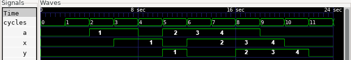
The analog waveform confirms that the BUFF chain delays the a2 path from a2_start to a2_end before it reaches the AND gate.
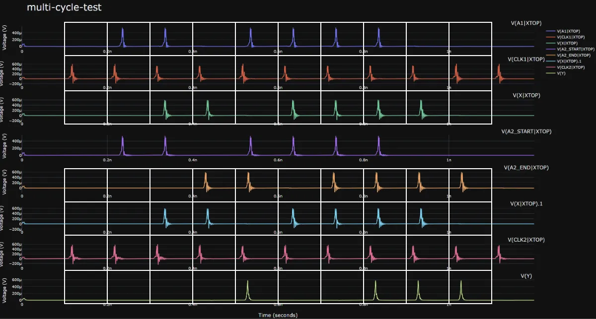
Example 3: Clock Between Data Arrivals
The arrival order at a clocked gate need not be strictly pipelined or strictly combinational.
This example uses an OR gate whose first data input, x, arrives before the clock, while its second data input, y1, arrives after the clock:
x < clk2 < y1
The circuit first computes x = a & b in a combinational style. It then feeds x and the feedback signal y1 into the OR gate, whose output is split into the circuit output y and the feedback path.
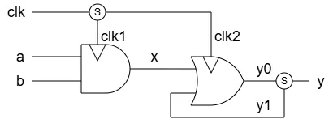
#![allow(unused)]
fn main() {
fn clock_between_data() -> Circuit<3, 0, 1, 0> {
let inputs = ["a", "b", "clk"];
let outputs = ["y"];
let (mut ckt, [a, b, clk], [], [y_out], []) =
Circuit::create(inputs, [], outputs, [], "ClockBetweenData");
let (clk1, clk2) = ckt.split(clk);
ckt.label(&clk1, "clk1");
let x = ckt.and(a % 0, b % 0, clk1 % 1).label("x", &mut ckt);
// Delay clk2 for analog simulation.
let mut clk2 = clk2;
for _ in 0..5 {
clk2 = ckt.buff(clk2);
}
ckt.label(&clk2, "clk2");
let (y1, y1_out) = ckt.gen_loop("y1");
// x arrives before the clock, while y1 arrives after it.
let y0 = ckt.or(x % 0, y1 % 2, clk2 % 1);
ckt.label(&y0, "y0");
let (y, y1) = ckt.split(y0);
ckt.unify(y, y_out);
ckt.unify(y1, y1_out);
ckt
}
}The arrival orders on the OR gate express the relationship directly: x % 0 arrives first, clk2 % 1 arrives next, and y1 % 2 arrives last.
This is neither the usual pipeline order, where the clock is first, nor the combinational order, where the clock is last.
The cycle-level logical simulation shows the resulting feedback behavior.
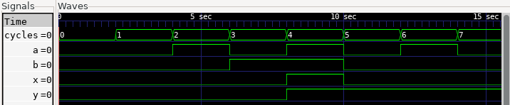
For the analog simulation, the five BUFF gates on the clk2 path provide the physical clock delay needed to realize this arrival order.
The waveform shows x, the delayed clock, y1, and y0 in their intended sequence.
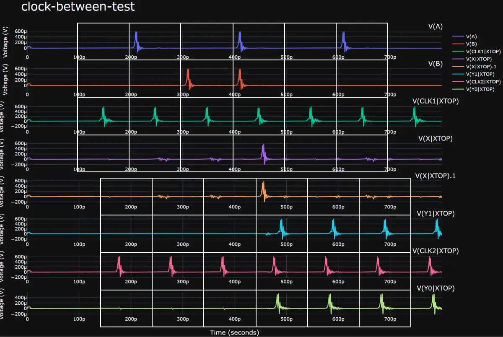
Example 4: Unsatisfiable Timing Constraints
RustSFQ rejects a circuit when its requested arrival orders within a cycle cannot be satisfied.
The following example resembles the previous feedback circuit, but it requires the feedback signal y1 to arrive before clk2:
#![allow(unused)]
fn main() {
fn unsatisfiable_timing() -> Circuit<3, 0, 1, 0> {
let inputs = ["a", "b", "clk"];
let outputs = ["y"];
let (mut ckt, [a, b, clk], [], [y_out], []) =
Circuit::create(inputs, [], outputs, [], "UnsatisfiableTiming");
let (clk1, clk2) = ckt.split(clk);
ckt.label(&clk1, "clk1");
let x = ckt.and(a % 0, b % 0, clk1 % 1).label("x", &mut ckt);
let (y1, y1_out) = ckt.gen_loop("y1");
// y1 is required before clk2.
let y0 = ckt.or(x % 0, y1 % 0, clk2 % 1);
let (y, y1) = ckt.split(y0);
ckt.unify(y, y_out);
ckt.unify(y1, y1_out);
ckt
}
}y1 % 0 requires y1 to arrive before clk2 % 1. However, y1 is produced from y0, and the OR gate cannot produce y0 until clk2 arrives.
The requested arrival order is therefore contradictory.
Generate this circuit separately from the valid examples:
cd samples/timings
cargo run invalid
RustSFQ stops before backend generation and reports Timing constraints are unsatisfiable.
To make the feedback design valid, add an intentional multi-cycle delay on the feedback path or revise the arrival-order constraints.